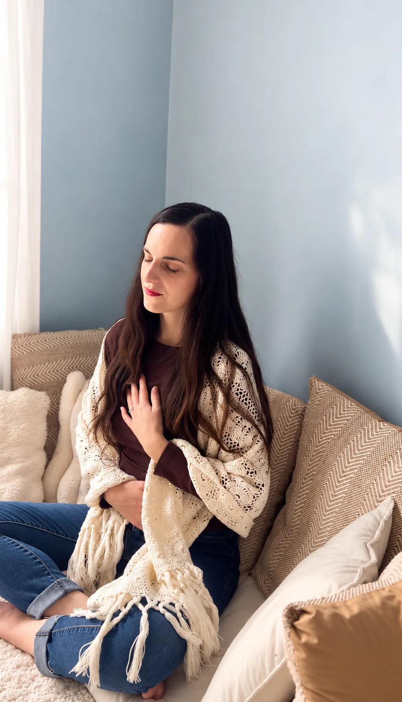

Tu as du mal à t’écouter
Tu doutes souvent de ce qui est juste pour toi et tu cherches parfois les réponses à l’extérieur.
Renouer avec ta sécurité intérieure.
Un espace pour mieux comprendre ce qui se vit en toi, revenir au corps et retrouver davantage de sécurité pour t’écouter et prendre ta place dans le monde.
Découvrir l’accompagnement →
Peut-être que tu te reconnais ici
Tu doutes souvent de ce qui est juste pour toi et tu cherches parfois les réponses à l’extérieur.
T’exprimer, agir ou prendre davantage ta place peut réveiller des peurs que tu ne comprends pas toujours.
Dans ta vie personnelle comme professionnelle, tu ressens le besoin de te déployer en alignant ta vie sur ce qui vibre à l’intérieur de toi.
Revenir dans tes sensations
Un accompagnement pour mettre de la conscience sur les mécanismes que tu as développés pour te protéger et apprendre à devenir une présence soutenante pour toi-même.
À travers la compréhension de ton système nerveux, l’écoute de ton corps et des ressources simples à intégrer dans ton quotidien, tu apprends à retrouver davantage de sécurité intérieure, à t’écouter et à prendre ta place dans le monde.
L’ACCOMPAGNEMENT
Revenir à soi, un pas après l’autre.
En visio.
TARIF
Tarif de lancement.
Une fois toutes les deux semaines.
Je suis supervisée par Suzie Rochefort, psychologue clinicienne, dans le cadre de cet accompagnement.